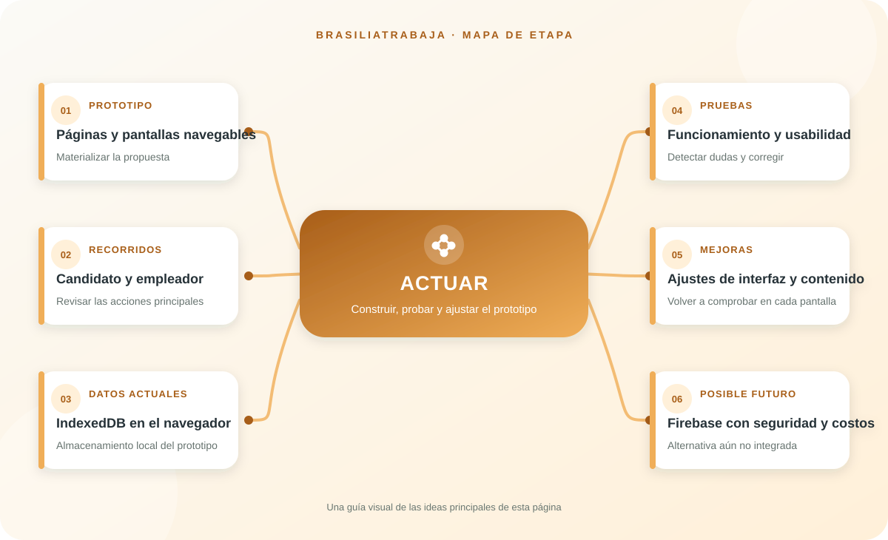

En esta fase, la propuesta se llevó a pantallas navegables y contenido web. El prototipo presenta la identidad de BrasiliaTrabaja, las rutas de candidatos y empleadores y la consulta de oportunidades. La construcción permitió revisar cómo se entiende el recorrido antes de pensar en una operación a mayor escala.
El proyecto describe almacenamiento local con IndexedDB para el prototipo. Esto permite experimentar con datos en el navegador, pero no sustituye una base central compartida entre todos los usuarios ni resuelve por sí solo el respaldo y la administración de cuentas.
Los bocetos y el storyboard sirvieron como referencia para ordenar pantallas, campos y acciones. Después, la revisión funcional y de usabilidad permitió detectar elementos que podían ser más claros y ajustar la propuesta. Cada mejora debe comprobarse de nuevo en computador y celular.
Una futura integración con Firebase requeriría diseñar autenticación, reglas de acceso, validación de publicaciones, copias de seguridad y manejo responsable de datos personales.